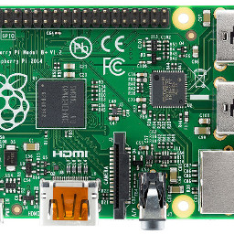
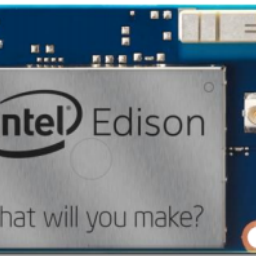

Raspberry PI

The Raspberry Pi is a series of credit card-sized single-board computers
developed in the United Kingdom by the Raspberry Pi Foundation with
the intent to promote the teaching of basic computer science in schools
and developing countries. The original Raspberry Pi and Raspberry Pi 2
are manufactured in several board configurations through licensed
manufacturing agreements with Newark element14 (Premier Farnell),
RS Components and Egoman. The hardware is the same across all
manufacturers. The firmware is closed-source.
Intel Edison

The Intel Edison is a tiny computer-on-module offered by Intel as a
development system for wearable devices and Internet of Things devices.
The system was initially announced to be the same size and shape as an
SD card and containing a dual-core Intel Quark x86 CPU at 400 MHz
communicating via Bluetooth and Wi-Fi. A later announcement changed
the CPU to a 22 nm Silvermont dual-core Intel Atom CPU, and in September
2014 a second version of Edison was shown at IDF, which was bigger and
thicker than a standard SD card.
TI Launchpad

he MSP430 can be used for low powered embedded devices. The current
drawn in idle mode can be less than 1 µA. The top CPU speed is 25 MHz.
It can be throttled back for lower power consumption. The MSP430 also
uses six different low-power modes, which can disable unneeded clocks
and CPU. Additionally, the MSP430 is capable of wake-up times below 1
microsecond, allowing the microcontroller to stay in sleep mode longer,
minimizing its average current consumption. The device comes in a
variety of configurations featuring the usual peripherals:
internal oscillator, timer including PWM, watchdog, USART, SPI,
I²C, 10/12/14/16/24-bit ADCs, and brownout reset circuitry.
Some less usual peripheral options include comparators
(that can be used with the timers to do simple ADC),
on-chip op-amps for signal conditioning, 12-bit DAC, LCD driver,
hardware multiplier, USB, and DMA for ADC results. Apart from some
older EPROM (MSP430E3xx) and high volume mask ROM (MSP430Cxxx) versions,
all of the devices are in-system programmable via JTAG
(full four-wire or Spy-Bi-Wire) or a built in bootstrap loader (BSL)
using UART such as RS232, or USB on devices with USB support.